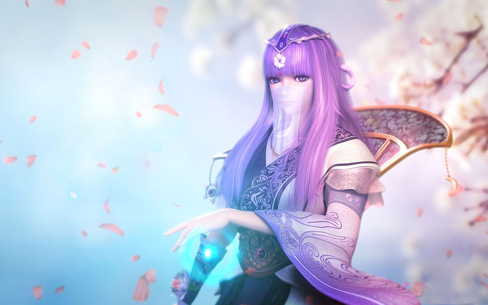
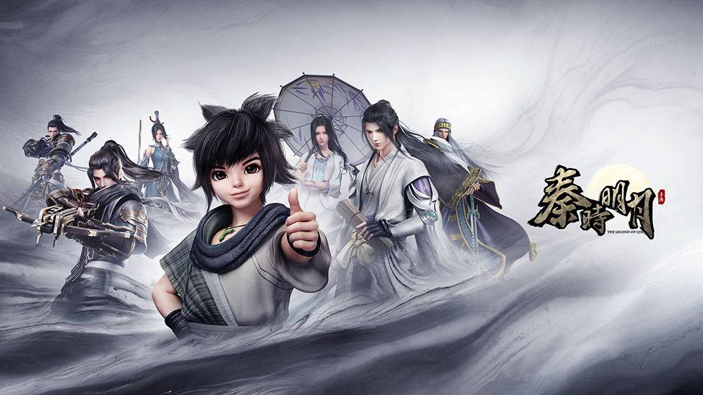

秦时明月
.jpg)
十年秦怀，再铸辉煌。有一把剑，它刺穿了曾经，现指着远方的荧惑之石，一起，就现在，一剑钟秦。
那是个花开的季节，偶然的，我认识了（秦时明月），起初，我只是好奇，因为我刚开始看 到它时，很惊奇，一个小小的动漫，怎么会有几亿的点击率，这恐怕是有些电影都做不到的点击率。 于是，慢慢地，我接触了它，从此，我沉醉了，直到今天，我才有些明白了，这部动漫从内而外，真的包含了很多：
从一个小孩变成一个侠客的过程里，透露出了称霸一时的大秦帝国的覆灭过程；在少年项羽成为西楚霸王的过程中，参入 了他和虞姬（石兰）少年的青涩情愫；从聚散流沙里，隐藏着一个少女对“他”的执着；在城府幽深的阴阳家，有着玄幻的咒 印和博大精深的阴阳术，也有高高在上的神秘主宰东皇；在小圣贤庄，保留着郎朗书声，存载着儒家的【四书】、【五经】； 东海，留下了徐福东渡日本的足迹，剩下了人们对长生不老的无限美好遐想；在战火连绵的六国，保存着令人心痛的废墟和无 家可归的流浪者；天上划过的荧惑之石，仿佛是对秦皇的某种提醒，又像是某个天象，暗指着哪位英雄侠客的命运。
一个好的动漫，不需要别人对它过度的称赞，它自身就有独特的光环，它不会因人们的谩骂而停下它前进的脚步。艺术是 奇特的，总有人会明白它的价值。秦时明月就是在漫漫长河中宝贵的一件艺术品。我为此感到很幸运，我遇见了它，因此， 我的人生才有了一道耀眼的光芒。
.jpg)
古代中国的传统文化是中国特有的一件艺术品，秦时明月之所以会有这么火爆的人气，是因为它巧妙的将古代中国的传统文化 融入在了其中，所以，它变成了中国动漫的一个“瑰宝”。孔孟庄周、儒墨之学、青龙白虎、朱雀玄武、海上蜃楼、这些，是古 代中国传统文化的象征，也是秦时明月的走遍全球的犀利武器。因为秦时明月制作的用心，所以，秦时明月登上了环球日报， 被全球的人们所知晓，正是因为它的特有魅力，才会有如此的伟大荣誉，也正是因此，我才会如此的痴迷于这个动漫。
至于那些所谓的‘抗击秦时明月’的人，我想，你们可能还不了解秦时明月，因为只有那些真正热爱秦时明月的，从一出版就 支持的人，才能明白秦时明月经历了多少挫折，但它们没有放弃，相对于那些支持了十年的人，我自愧不如。人生中有多少十 年可以让你任意挥洒，岁月无情，它不会因你一人而停下来等你，可他们，无谓。对此，我很惭愧，也同样很欣慰。
.jpeg)
真正的爱，是没有任何报酬的追求，就如同秦时明月中的赤练一样，她默默的爱着卫庄，为了他，她从尊贵的韩国公主‘红莲’ 变成了流沙组织中的赤练。虽然她知道爱上这个男人的后果，可她义无反顾的为他付出，为他受伤，尽管他不知道她做的一切， 而她，无怨。因为只有当你真正的爱上某样事物时，你才会明白这种感觉，就像我爱秦时明月一样，那是无谓报酬的痴爱。那 些分散在全球各地的秦迷的支持，正是秦时明月制作的动力，他们给了秦时明月精神上和物质上的支持，使秦时的队伍如当时 的秦朝帝国一样繁荣，这是只有秦时明月能做到的奇迹，我相信。
可能有些人会认为这是徒劳无功，可我就是愿意这样徒劳的永远支持下去，不顾他人怎样嘲讽，依旧支持，在茫茫的人生道路 上，刻一道无悔的关于青春的秦时痕迹、留一段只属于秦时明月的美好时光，这是我的愿望，也是天下秦迷的追求。
在追求秦时明月的道路上，彻醉又何妨，经岁月洗礼后，回首处，你会发现，最终留下的，是青春的任性，是少年的无知，也是不变的支持。
愿，秦时明月，永远活在我心中；愿，秦时文化牢牢的长在我脑海里。